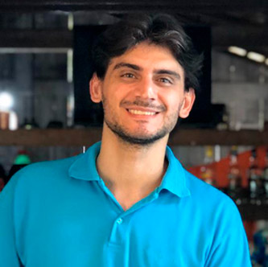

O Pará vive um boom na área do empreendedorismo de base tecnológica, com diversas iniciativas públicas e privadas de apoio a ideias e startups inovadoras acontecendo ao mesmo tempo. A maior delas é o Startup Pará, ação do governo estadual que entrega qualificação, consultorias especializadas, investimentos diretos (equity free) de mais de R$ 7 milhões e apoio no gerenciamento das propostas que serão contratadas.
Como inovação é uma atividade coletiva, queremos dar a nossa colaboração para que o movimento inovador no estado seja imparável.
Nossa equipe de consultores especializados preparou uma trilha de conhecimento especial, com 03 dias de oficinas sobre elaboração de projetos, negócios de base tecnológica, problema e validação, mercado e muito mais. Ainda mergulhamos no edital do Startup Pará para mastigar conceitos, exigências e documentos que você precisará ter em mãos na hora de fazer a sua inscrição.
As inscrições do Startup Pará 2.0 já estão abertas no site www.startuppara.com.br
e seguem até 10 de dezembro.
Ao todo, 80 propostas receberão consultorias especializadas em negócios inovadores, sendo que do total de vagas abertas no edital, 50 são para propostas ainda em fase de ideação e 30 são para empresas de base tecnológica.
Para você que vai empreender no Pará, venha com a gente. Fique por dentro e saiba como fazer bonito com seu projeto de empreendedorismo nesta iniciativa, que busca tornar o estado o melhor destino para empreendimentos inovadores da região.
Faça a sua inscrição pelo formulário. Em breve, você receberá o acesso para o conteúdo do cronograma que você pode conhecer no final desta página.
O que você vai ter?
![[object Object], de qualificação em 03 dias](clock.png)
14 horas de qualificação em 03 dias
Roadmap
-
Alex Lima
Atua no ecossistema de inovação desde 2013, fundador do Aquiri Valley/AC e do Amazônia Valley. Realiza atendimento a empreendedores que desejam inovar e validar suas idéias de negócios e produtos em empresas tradicionais e startups. Participa, organiza e apoia eventos de empreendedorismo e inovação, além de atuar como facilitador de oficinas, palestras, workshops e seminários. Tem MBA em Gestão Empresarial Estratégica (USP) e pós-graduação em Inovação e Tecnologia (UNB).
- 
Renato Coelho
Renato Coelho de Souza atua no ecossistema de inovação paraense desde 2016, realizando atendimento a empreendedores que desejam inovar em suas organizações e também a candidatos empresários de startups. Participa, organiza e apoia eventos de empreendedorismo e inovação, além de atuar como facilitador de oficinas, palestras e seminários.
-
Fabrício de Paula
Empreendedor com experiência em gerenciamento de projetos, captação de recursos e políticas públicas. Atua como consultor de empresas e setor público para projetos de investimentos por meio da Órbita Consultoria e Sistemas.
Tem qualificação em desenvolvimento sustentável de cidades e gestão de projetos de desenvolvimento (BID), gestão de investimentos públicos (ENAP), gestão de projetos urbanos (Ministério das Cidades), e implantação de ambientes de inovação (ANPROTEC). -
Jorge Freitas
Jorge Freitas é gestor de projetos de inovação e diretor de operações da startup Reviewmais. Trabalha na concepção de território inovativo para que surjam novos negócios disruptivos, ajudando no desenvolvimento econômico e Social local, criando uma ambiência Intra e Inter conectada; Heterogênea baseada na quádrupla hélice da inovação. Formação Empreendedora na visão de “Funis de inovação” visíveis e acessíveis. Consultor na área empresarial com expertise em validação de produtos e negócios nascentes, criação de personas e segmentação de mercados.
Timeline
-
24/1117hProblema e Público-Alvo19hInovação Disruptiva e a Revolução 4.0
-
25/1117hValidação: Princípios, Importância e Ferramentas19hTamanho e Viabilidade de Mercado
-
26/1117hTimes e Equipes do Futuro: Como Manter uma Equipe Engajada 100%19hPor Dentro do Edital: O Que Ter em Mãos ao Inscrever Meu Projeto?
Todos os eventos terão duração de 2 horas.
Pensem em atividades que possam auxiliá-los no preenchimento adequado ao edital.
Reservem alguns minutos para perguntas e respostas.
Tragam exemplos práticos que os participantes possam se espelhar.
Será o horário de Brasília.